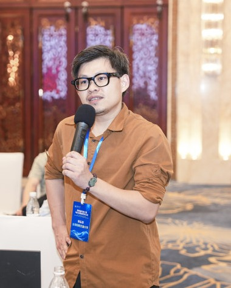
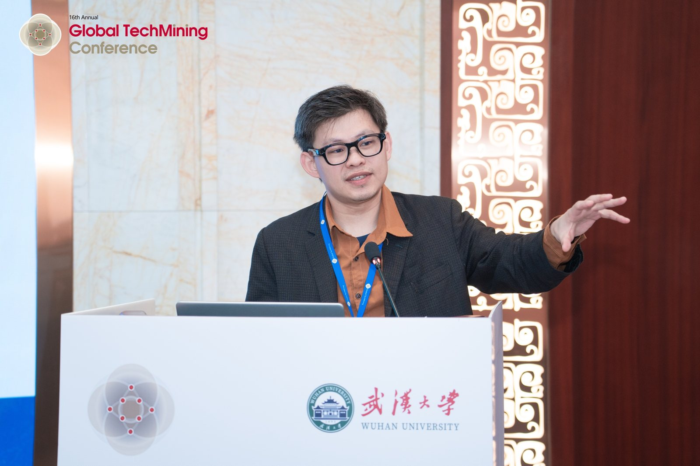
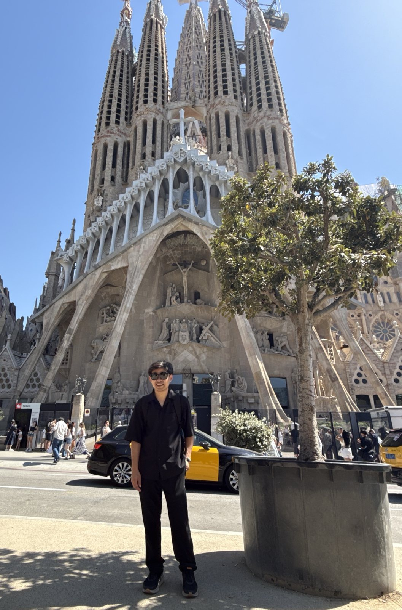
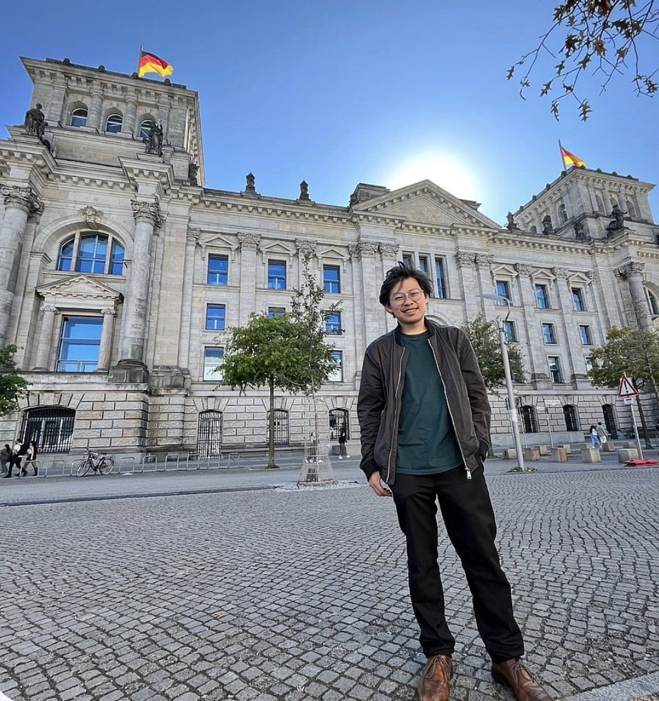

Featured work · 代表作
When rankings become law, a few authors can change who qualifies
Governments increasingly write university rankings into immigration and other policy thresholds. Tracing 20,492 universities from 2010 to 2025 and recomputing the Leiden Ranking, I show that output a university holds only through a few authors also affiliated abroad can move it across those thresholds — and that the counting rule decides how far.
各國把大學排名寫進移民與政策門檻。完整重算萊頓排名後發現，少數跨國掛名作者就能讓大學名次大幅移動（完整計數中位數 221 名，分數計數 86 名），三分之一跨過法規使用的名次線。
Two lines of research 兩條研究主軸
Line 1 · 主軸一
Innovation ecosystems and technology strategy
How firms, universities and governments build new industries: transformation pathways in Taiwan's AI, biotech, medical-device and green-technology sectors; AI adoption in manufacturing; patent strategy; and multi-criteria decision analysis (AHP, MCDM) for policy and management choices. Most of my 62 conference papers, written with my advisor's team, belong here.
企業、大學與政府如何建立新產業：台灣 AI、生技、醫材與綠色科技的轉型路徑、製造業導入 AI、專利佈局，以及用多準則決策（AHP、MCDM）支援政策與管理決策。我與指導教授團隊合著的 62 篇研討會論文多屬這條主軸。
Journal of Scientometric Research · Journal of Scientific & Industrial Research · Technology in Society · 北商學報
Line 2 · 主軸二
Performance metrics and evaluation systems
What happens when an indicator becomes a rule. Rankings written into law, citation lists turned into salary rules, and patent counts used to judge universities all create incentives; I measure how the construction of these metrics shapes the decisions of organizations and the people in them — a question of incentive design and governance as much as of data.
當指標變成規則會發生什麼事。排名寫進法律、引用名單變成薪資規則、用專利數評比大學，都在製造誘因；我量測這些指標的建構方式如何影響組織與個人的決策——這既是資料問題，也是誘因設計與治理的問題。
Nature Human Behaviour · Journal of Informetrics · Quantitative Science Studies · Research Evaluation · Scientometrics · Social Networks

About 關於我
I am a PhD student at the Institute of Management of Technology, National Yang Ming Chiao Tung University, Taiwan. My research connects technology management with performance measurement: how innovation ecosystems and industries transform, and how the metrics used to steer organizations — rankings, citation lists, patent counts — shape their decisions. I work with full-population data (OpenAlex, patents, the CWTS Leiden Ranking Open Edition) and build my own analysis tools, including an AI-assisted qualitative coding application.
Before research I worked in manufacturing as a senior engineer at Jabil (mold development and CNC machining), and during the PhD I was placed with a technology firm through an ITRI-run industry programme. I release the code and data behind each paper so that every result can be recomputed.
國立陽明交通大學科技管理研究所博士生。我的研究連結科技管理與績效衡量：創新生態系與產業如何轉型，以及用來管理組織的指標（排名、引用名單、專利數）如何影響組織的決策。我使用完整母體資料（OpenAlex、專利、萊頓排名開放版），也自行開發分析工具，包括 AI 輔助質性編碼軟體。進入學術界前，我在綠點高新科技（Jabil）擔任模具開發與 CNC 加工資深工程師；博士期間參與工研院培訓的產業計畫，派駐科技公司實作。每篇論文都公開程式與資料，讓每個結果都能重算。
Research in pictures 研究圖像
One figure per paper, from both lines of research. Click through for the paper and its code.


Digital humanities · 數位人文
A Hakka lineage, from handwritten records to an open platform
An HGIS platform that links a lineage's migration from Guangdong to Taiwan with its generation tree, built from records compiled by the family. The public version shown here is anonymized; the paper on it is under review.
把一個客家宗族的手寫族譜，做成連結遷徙地圖與世系樹的歷史地理資訊平台。這裡展示的是匿名化的公開版本；相關論文審查中。
Where I have worked 研究足跡
Talks 演講與研討會



Teaching · 教學
Hands-on, from the soldering iron to the citation database
I lead hands-on workshops, from soldering a beginner electronics kit step by step to running bibliometric and patent analyses. I also make my own video tutorials, slides and manuals for these methods and share them with junior members of the lab.
我帶實作課程，從一步步焊好入門電子套件，到動手跑書目計量與專利分析；也自製這些方法的教學影片、操作簡報與手冊，提供實驗室學弟妹使用。
Along the way 路上

